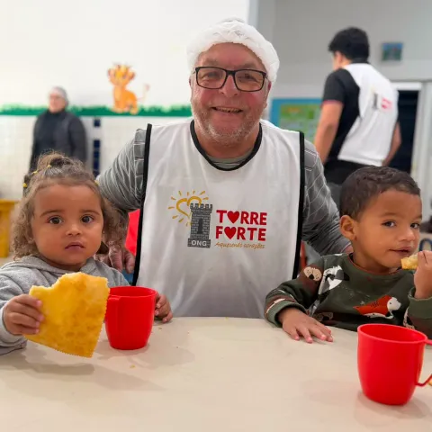
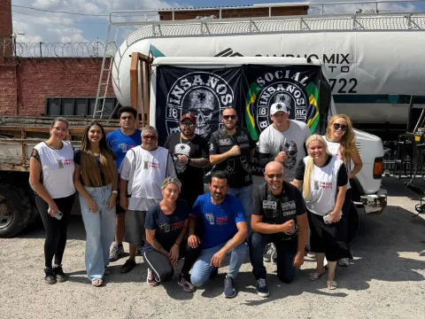

Projetos
Cinco projetos, um mesmo cuidado
Conheça as iniciativas da Torre Forte para crianças e famílias de comunidades do ABC Paulista.
Alimentação
Pastel Solidário
Alimento, carinho e momentos de alegria para crianças e famílias de comunidades do ABC Paulista.
Realizado no último sábado de cada mês, o Pastel Solidário é mais do que a distribuição de alimentos: é uma oportunidade de fortalecer vínculos, oferecer acolhimento e mostrar que pequenos gestos podem transformar vidas.
- Quem recebe
- Crianças e famílias de comunidades do ABC Paulista.
- Quando
- No último sábado de cada mês, em comunidades da região do ABC.


Esporte
Jiu-jítsu Solidário
O esporte como ferramenta de desenvolvimento e inclusão social.
Por meio das atividades, o projeto busca proporcionar às crianças novas oportunidades de aprendizado, incentivando valores como disciplina, respeito, dedicação e superação. Mais do que uma atividade esportiva, é uma oportunidade de desenvolvimento pessoal e convivência.
- Quem participa
- Crianças atendidas pelo projeto.
- Como participar
- Fale com a equipe pelo WhatsApp para saber mais.
Música
Aulas de música
A música como ferramenta de expressão, criatividade e desenvolvimento.
Por meio das aulas de música, a Torre Forte incentiva crianças a descobrirem novas habilidades, ampliarem seus conhecimentos e encontrarem novas possibilidades de aprendizado. O projeto valoriza o acesso à cultura e a oportunidade de desenvolver talentos.
- Quem participa
- Crianças atendidas pela instituição.
- Como participar
- Fale com a equipe pelo WhatsApp para saber mais.
Solidariedade
Campanhas solidárias
Pessoas, instituições e parceiros mobilizados por um mesmo propósito.
As campanhas solidárias ajudam crianças e famílias que enfrentam situações de vulnerabilidade. Por meio da arrecadação de alimentos e materiais, elas contribuem diretamente para o trabalho da Torre Forte.
- Ações já realizadas
- Campanhas em parceria com o Liceu Jardim e a iniciativa Lacre Solidário.
- Resultados relatados
- Mais de 300 kg de alimentos arrecadados em uma campanha e cerca de 50 pacotes de fraldas recebidos.
- Frequência
- Campanhas de arrecadação realizadas todos os anos.


Comunidade
Ações comunitárias
Acolhimento, solidariedade e aproximação com as famílias em datas especiais.
Cada ação é uma oportunidade de fortalecer os laços com a comunidade e levar atenção e cuidado às crianças. As atividades fazem parte do compromisso da Torre Forte de estar presente na vida das famílias e contribuir para um futuro com mais oportunidades.
- Quem participa
- Crianças e famílias das comunidades atendidas.
- Quando
- Em datas especiais ao longo do ano.


Ajude a manter os projetos de pé
Com a sua doação, mais crianças do ABC têm acesso a alimentação, esporte e música.
Aquecendo corações